Time Real São Francisco · Cachoeira (BA)
65 jovens, um time e um vice-campeonato
Com treinador, uniformes, bolas e lanche garantidos pelo Instituto, o Real São Francisco reúne 65 jovens de 12 a 17 anos. Em 2025, chegou ao vice-campeonato.

Conectamos pessoas ao oceano por meio da educação, da cultura, da ciência, da tecnologia e de experiências transformadoras.
Promovemos a Cultura Oceânica para ampliar conhecimento, despertar pertencimento e inspirar novas formas de cuidar de nós, das comunidades e do planeta.

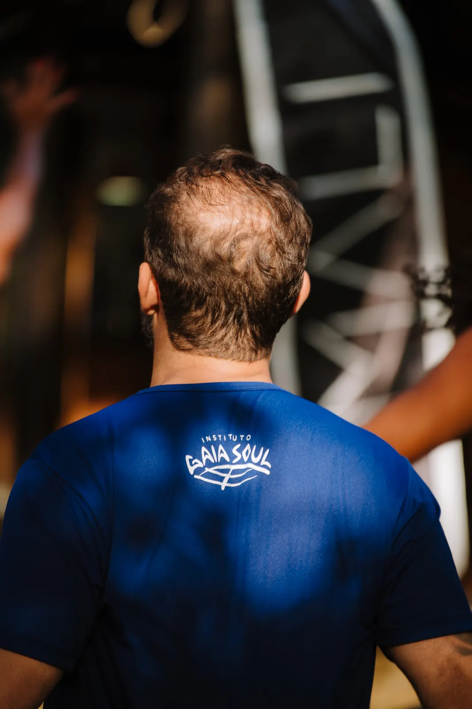
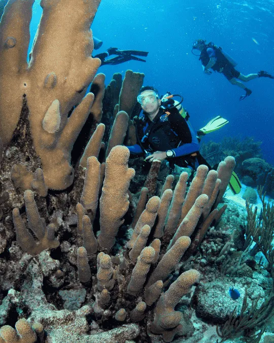
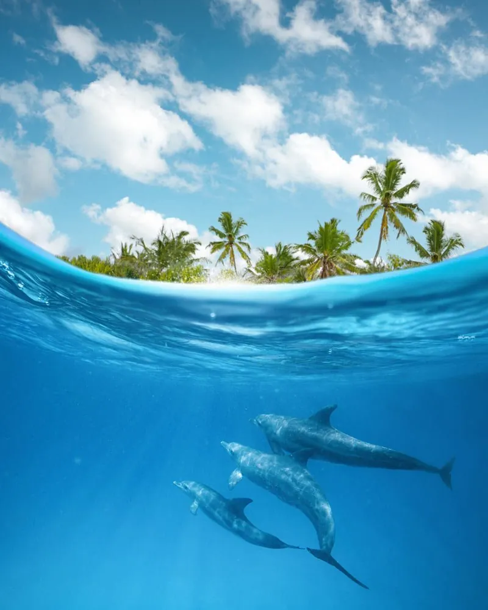
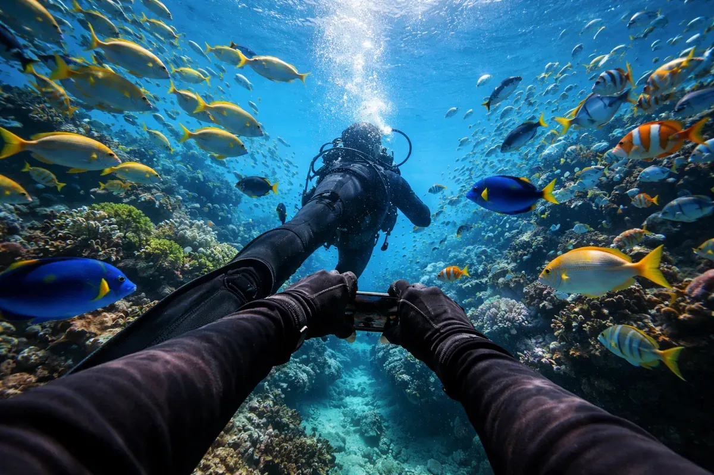
O Instituto Gaia Soul é uma organização dedicada à promoção da Cultura Oceânica e à construção de novas formas de conexão entre pessoas, oceano e sociedade.
Unimos educação, ciência, cultura, tecnologia e bem-estar para transformar conhecimento em consciência e consciência em ação.
Nossa atuação nasce na Bahia, um território profundamente conectado ao mar, e se expande em projetos que chegam a escolas, comunidades, empresas e a quem ainda nem conhece o oceano de perto.
Conheça o Instituto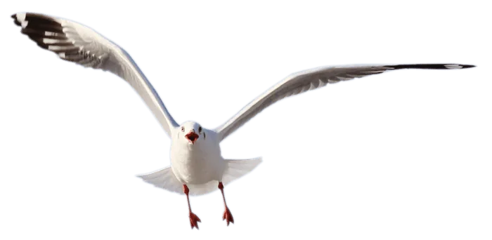
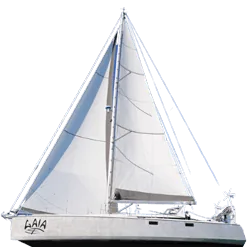
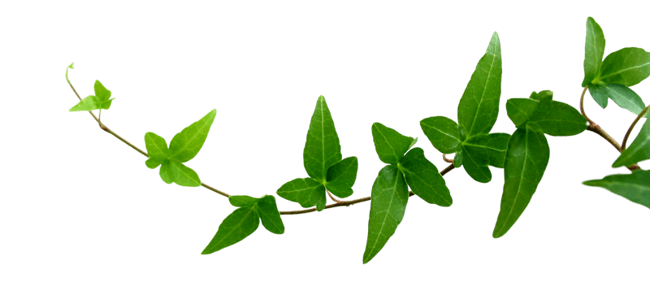
Criamos projetos que aproximam pessoas do oceano por diferentes caminhos: da educação às experiências imersivas, da floresta ao bem-estar. Escolha por onde quer começar.
 Educação
EducaçãoA Cultura Oceânica dentro da sala de aula, com livros, realidade virtual e muita curiosidade.
Conheça o projeto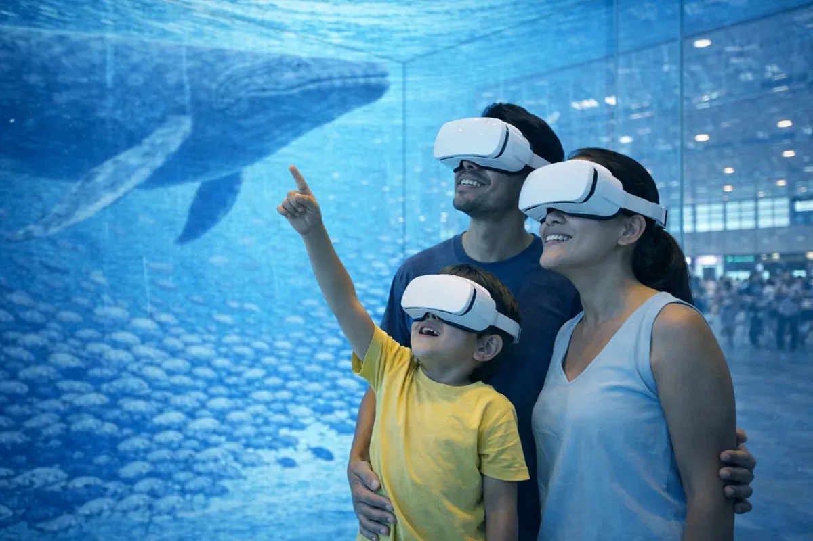
TecnologiaUm mergulho em realidade virtual no meio do aeroporto, do shopping ou do seu evento.
Conheça o projeto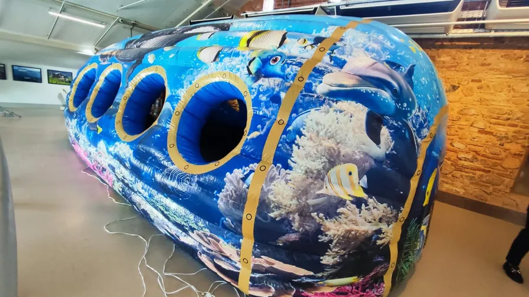
Cultura OceânicaUma expedição coletiva dentro de um submarino, com escotilhas, sons e realidade virtual.
Conheça o projeto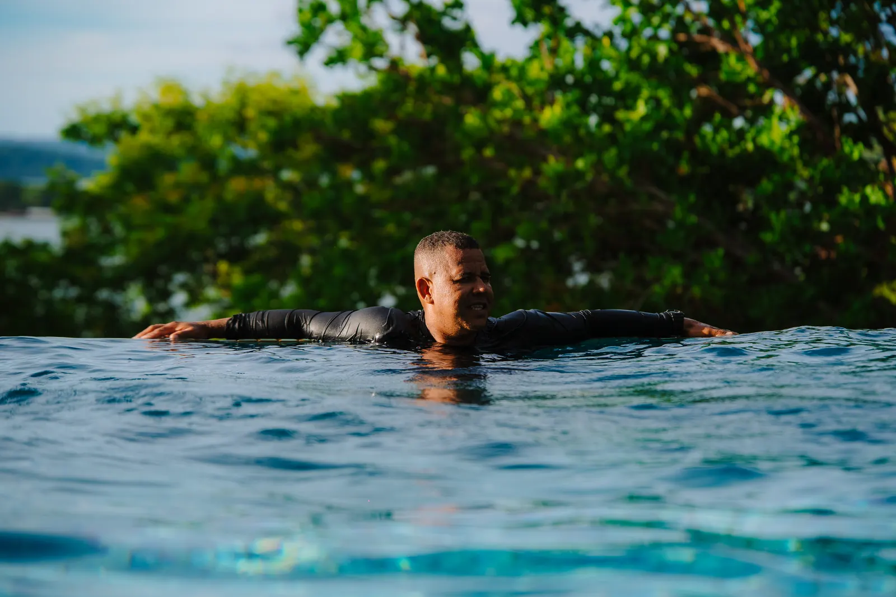
OceanoVivências no mar e na natureza para desacelerar, respirar e se reconectar.
Conheça o projeto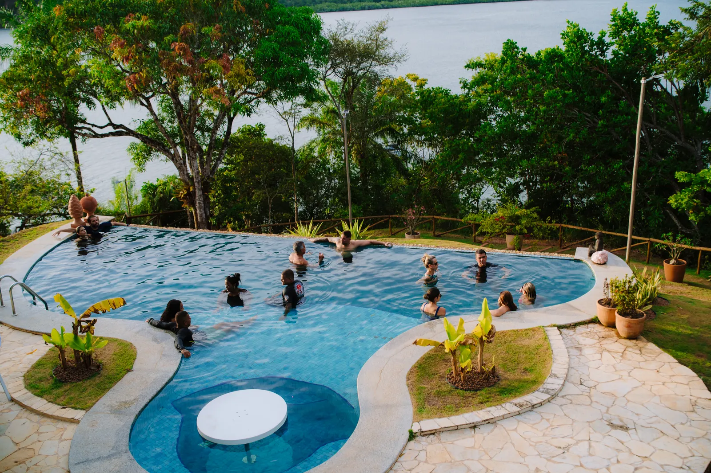
Mata Atlântica100 hectares de Mata Atlântica preservada na Baía do Iguape, onde funciona a nossa sede.
Conheça o projeto Educação
EducaçãoHistórias de alto mar que viram consciência ambiental em escolas, eventos e empresas.
Conheça o projeto
E se o fundo do mar coubesse dentro da sala de aula? O Imersão Azul leva a Cultura Oceânica para as escolas com 11 livros autorais, realidade virtual, plataforma digital e uma jornada gamificada que transforma ciência em encantamento.
Você está no aeroporto, coloca os óculos e, em segundos, está nadando entre tartarugas e cardumes. O Mundo Submarino 360° leva o oceano até onde as pessoas estão, com uma experiência sensorial que ninguém esquece.
Escotilhas, luzes azuis e o som do mar: crianças e adultos entram juntos num submarino e partem numa expedição pelos ecossistemas marinhos. Conhecimento que entra pelos olhos, pelos ouvidos e pelo coração.

Boiar, respirar no ritmo das ondas, silenciar. A Oceanoterapia usa a água e a natureza como caminho para presença e bem-estar, e quem se reconecta com o mar passa a querer protegê-lo.

A Mata Atlântica é um dos biomas mais ameaçados do planeta. Às margens da Baía do Iguape, a Mata Quântica protege 100 hectares de floresta, em processo para se tornar uma Reserva Particular do Patrimônio Natural (RPPN), e é a casa do Instituto.
Oceanógrafo com décadas de vida no mar, Marcelo Telles transforma as travessias que viveu em palestras que emocionam e fazem pensar, em congressos, escolas e empresas, inclusive com óculos de realidade virtual.
Desde 2019 caminhamos ao lado das famílias de pescadores e marisqueiras e das comunidades quilombolas da Baía do Iguape: esporte para os jovens, regatas de canoa, educação ambiental nas escolas e presença nas datas que importam.
Nossa atuação conecta Cultura Oceânica, educação, tecnologia, bem-estar e território. Caminhos diferentes, unidos por um mesmo propósito: aproximar pessoas do oceano e transformar essa conexão em conhecimento, consciência e ação.

Traduzimos a ciência do oceano em experiências educativas acessíveis, capazes de despertar curiosidade, consciência e pertencimento.
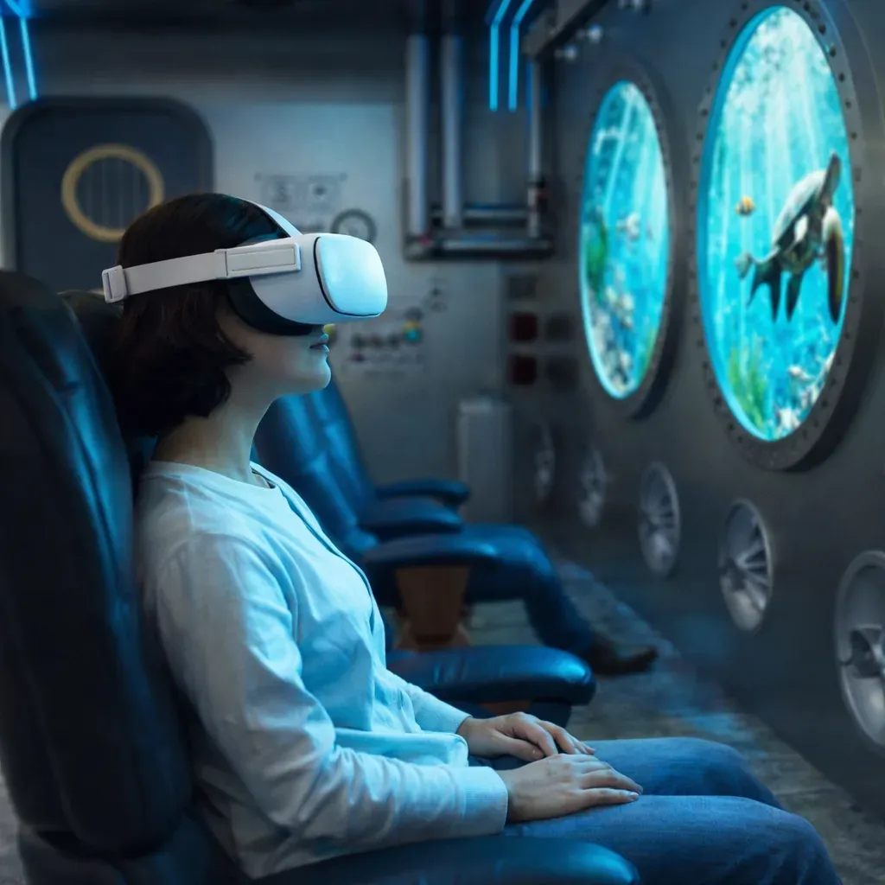
Realidade virtual, audiovisual e experiências sensoriais para que qualquer pessoa possa conhecer e viver o universo oceânico.
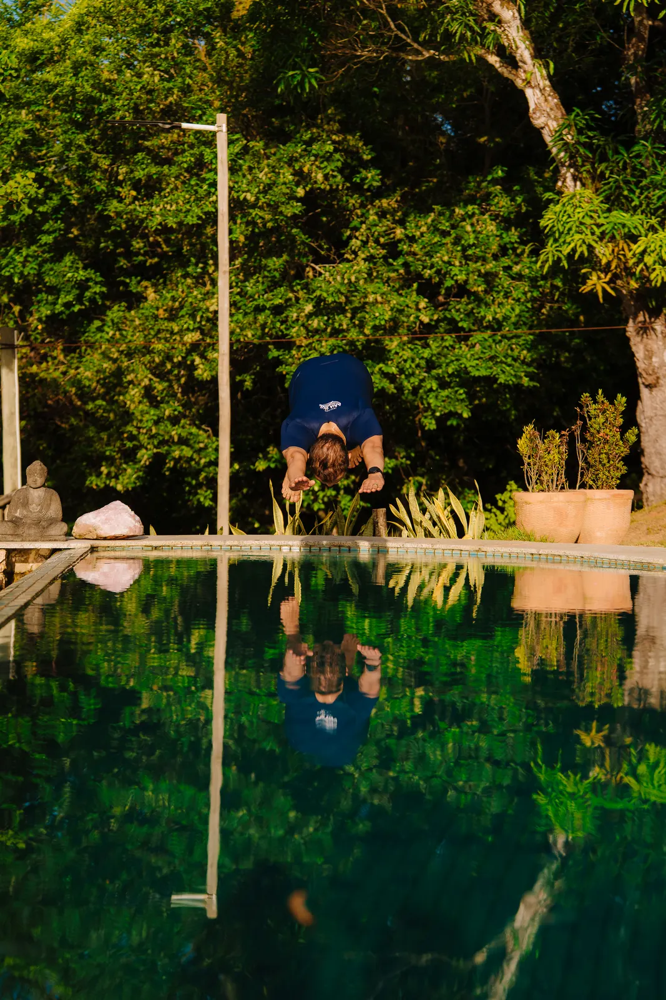
Experiências que estimulam a reconexão consciente com a água e com a natureza, promovendo presença e bem-estar.
Iniciativas ligadas à realidade social, ambiental e cultural dos territórios e das suas comunidades.
Números reais do nosso trabalho junto às escolas e às comunidades da Baía do Iguape.
Apoio à Associação de Pescadores e Marisqueiras de Cachoeira.
Time Real São Francisco, de 12 a 17 anos, vice-campeão em 2025.
Presença contínua na Reserva Extrativista da Baía do Iguape.
Coleção do Imersão Azul, alinhada à BNCC e à Década do Oceano.
Nossa história nasce num território profundamente conectado ao mar. Toque nos pontos do mapa e aproxime, nível por nível: da Baía de Todos-os-Santos até a nossa sede, na Mata Quântica.
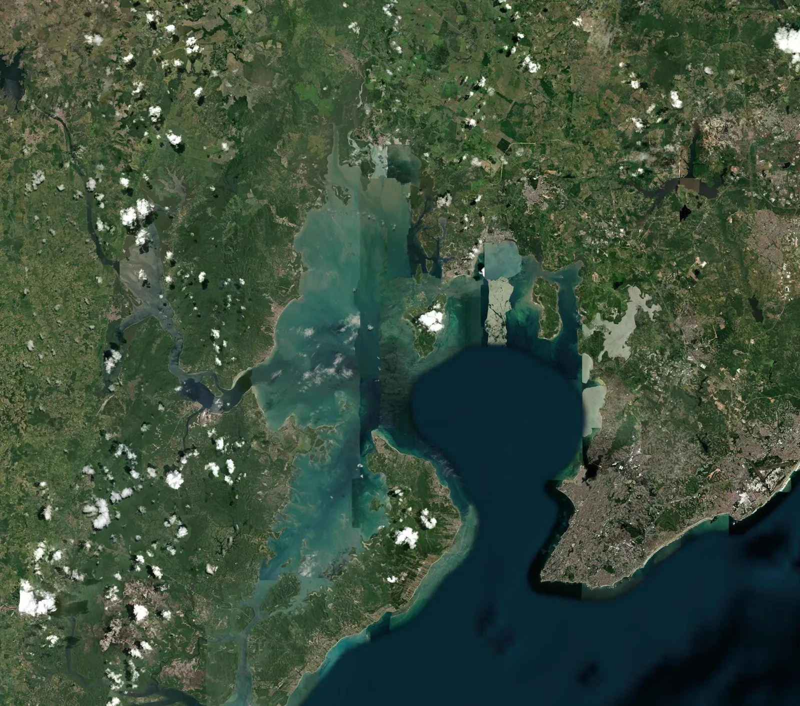
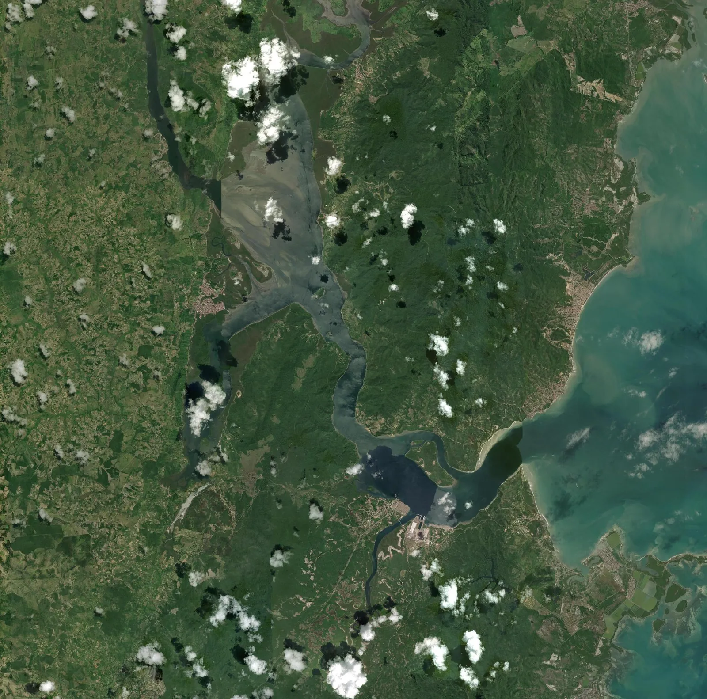
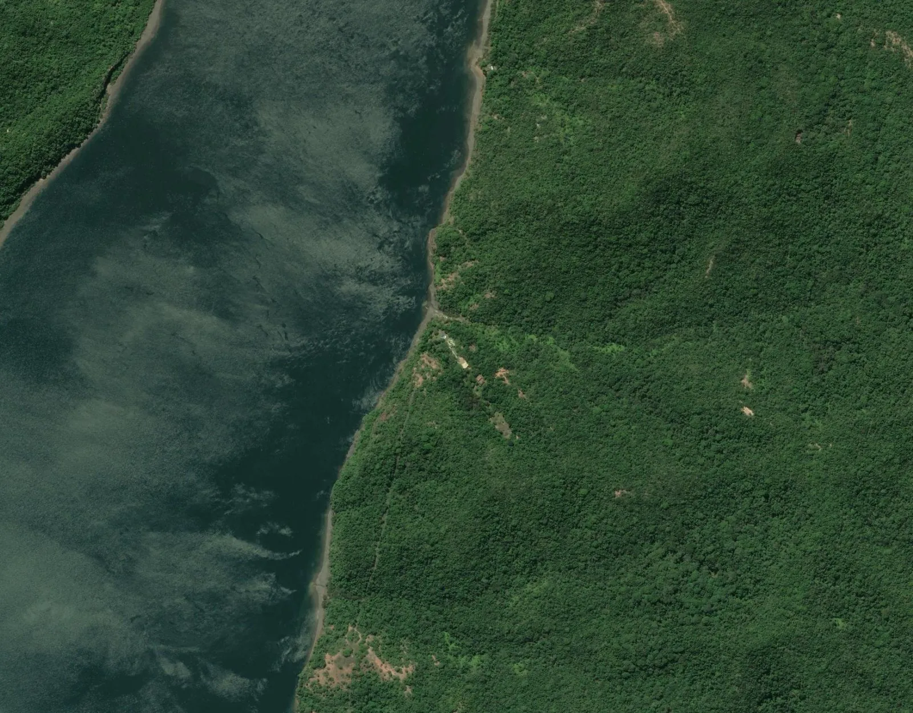
100 hectares preservadosA maior baía do Brasil, protegida como APA. É daqui que o nosso território começa.
RESEX onde vivem comunidades quilombolas e pesqueiras, com quem construímos esporte, educação e apoio às famílias.
100 hectares de Mata Atlântica preservada, em processo para se tornar RPPN.
Com treinador, uniformes, bolas e lanche garantidos pelo Instituto, o Real São Francisco reúne 65 jovens de 12 a 17 anos. Em 2025, chegou ao vice-campeonato.

Apoiamos a Associação de Pescadores e Marisqueiras de Cachoeira, que reúne 803 famílias, e estamos presentes nas datas que importam para as comunidades tradicionais do território.
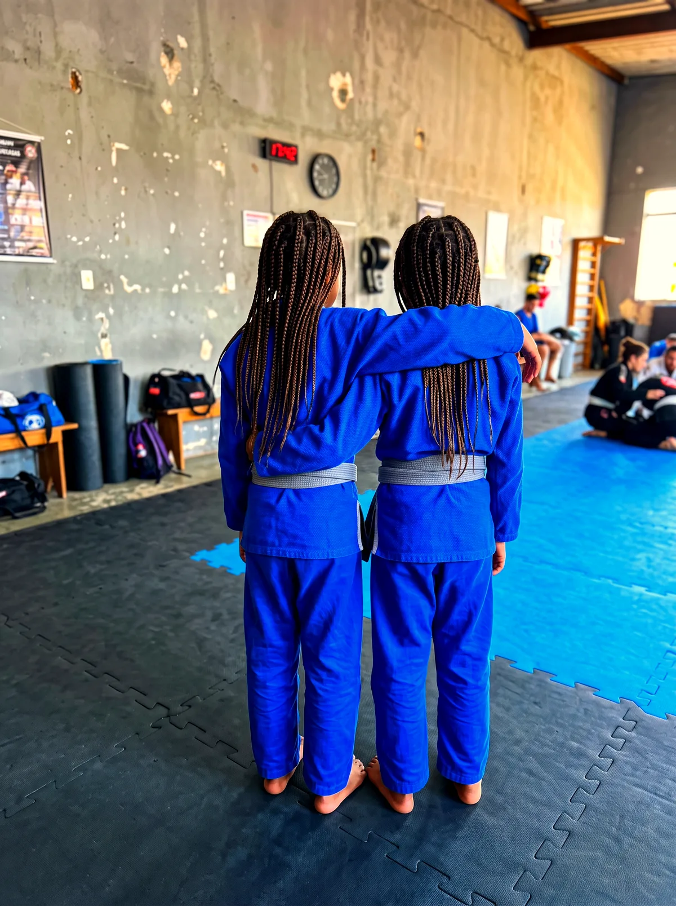
As irmãs gêmeas Larissa e Stella encontraram no esporte um caminho de disciplina, pertencimento e conquista, e se tornaram campeãs baianas de jiu-jitsu.
Os Guardiões Gaia Soul são pessoas, empresas e organizações que escolheram navegar com a gente. Cada pessoa que embarca fortalece a nossa capacidade de levar Cultura Oceânica, educação e experiências transformadoras para mais gente e mais territórios.
Contribua todo mês ou de forma pontual e ajude os nossos projetos a seguirem navegando.
Apoio mensal • Pix • Imposto de Renda • VoluntariadoQuero ser GuardiãoSua empresa pode apoiar projetos e construir impacto com a gente de diferentes formas.
Lei Rouanet • Patrocínio • Investimento Social Privado • ESG • Programas CorporativosQuero apoiar como empresaIniciativas do Instituto Gaia Soul abertas a novos parceiros, patrocinadores e apoiadores.
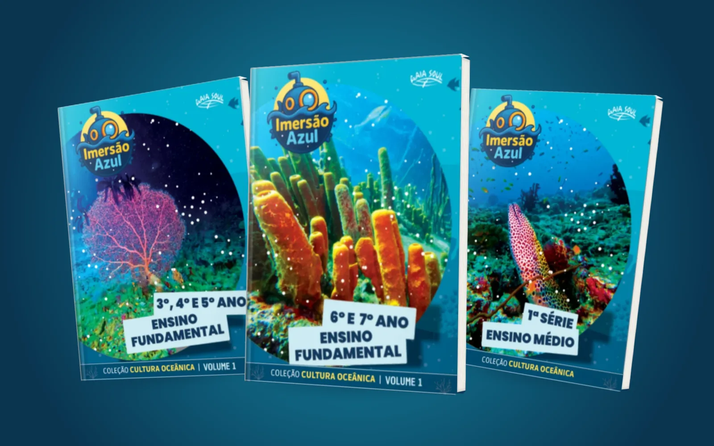
Leve o oceano para dentro das escolas.

Mantenha em campo o Real São Francisco e as regatas da Baía do Iguape.
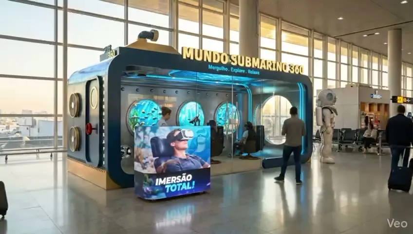
Leve o fundo do mar para aeroportos, shoppings e eventos com a sua marca.
Construímos relações com organizações que compartilham com a gente o compromisso de gerar impacto positivo para pessoas, comunidades e oceano.
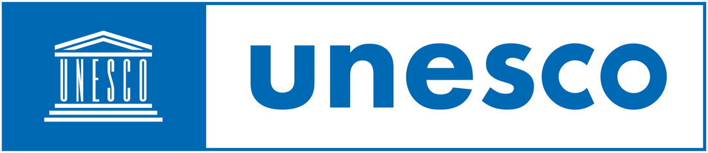
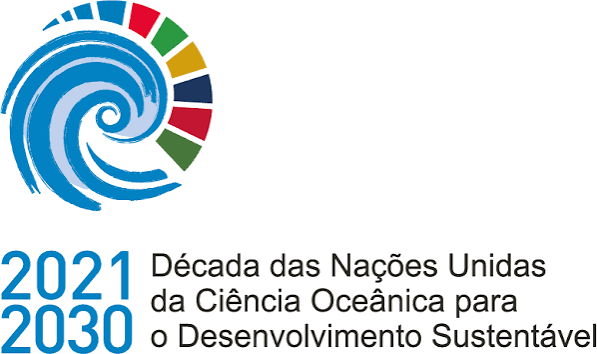

Projetos, histórias, oportunidades e conteúdos sobre o oceano direto no seu WhatsApp.
Pessoas, empresas, escolas, comunidades e organizações podem ajudar a construir uma sociedade mais conectada ao oceano.